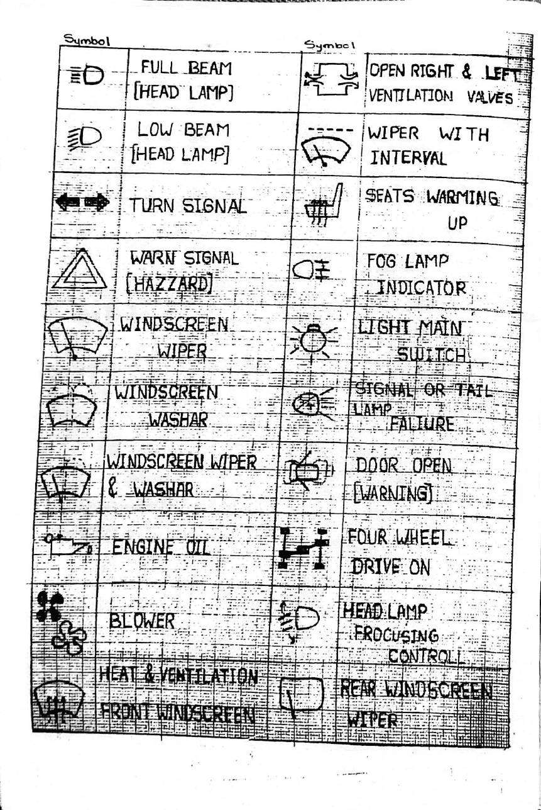
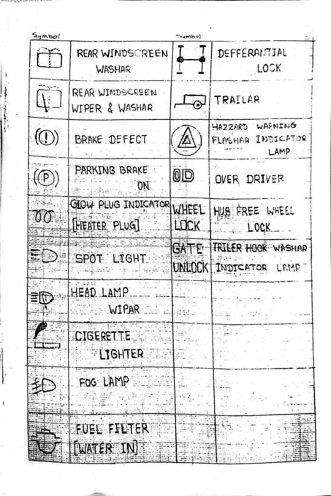

රියදුරු බලපත්ර ලිඛිත විභාගය (සැහැල්ලු වාහන)
ප්රශ්න 40 (සියල්ල නිල DMT ප්රශ්න පොතෙන්) · සමත් වීමට 30/40 · ඉලක්කය 40/40 · සෑම වාරයකම නව ප්රශ්න පත්රයක්
0/40
60:00
0
ඕනෑම ටැබ් එකක වැරදුණු ප්රශ්න මෙහි ස්වයංක්රීයව එකතු වේ – එකම ප්රශ්නය කිහිප වරක් නොපෙන්වයි. මෙහිදී නිවැරදිව පිළිතුරු දුන් විට එය ලැයිස්තුවෙන් ඉවත් වේ. (මෙම උපාංගයේ බ්රවුසරයේ සුරැකේ.)
ප්රශ්න පත්රයේ සැකැස්ම
| මුළු ප්රශ්න | 45 – සංඥා 20 · මාර්ග සලකුණු 10 · මාර්ග නීති 10 · තාක්ෂණික දැනුම 5 |
| සැහැල්ලු වාහන | ප්රශ්න 40ට පිළිතුරු · අවම 30ක් නිවැරදි විය යුතුය |
| බර වාහන | ප්රශ්න 45ම · අවම 35ක් නිවැරදි විය යුතුය |
සංඥා හඳුනා ගැනීම
| අනතුරු ඇඟවීමේ සංඥා | කහ පැහැති දියමන්ති (කොණ මත සිටුවූ හතරැස්) හැඩය · කළු දාරය · කළු සංකේතය. (රතු දාර සහිත සුදු ත්රිකෝණ නොවේ!) |
| තහනම් සංඥා | සුදු රවුම · රතු වළල්ල · කළු සංකේතය · බොහෝ විට රතු ඇල තීරුවක් |
| අනිවාර්ය සංඥා | සුදු රවුම · රතු වළල්ල · කළු ඊතලය · රතු ඇල තීරුවක් නැත (ලංකාවේ නිල් රවුම් නොවේ) |
| නැවැත්වීම් සංඥා | නිල් රවුම · රතු වළල්ල: තීරුවක් = නැවැත්වීම තහනම් · X = නැවැත්වීම සහ නතර කිරීම තහනම් · I = ඔත්තේ දින · II = ඉරට්ටේ දින |
| සීමා කිරීමේ සංඥා | රතු වළල්ල තුළ අංක – වේගය, පළල, උස, බර |
| නවතින්න (STOP) | රතු අෂ්ටාස්රය – සෑම විටම සම්පූර්ණයෙන් නවතින්න |
| මග දෙන්න | යටිකුරු ත්රිකෝණය – මාර්ගය පැහැදිලි නම් නොනවතා යා හැක |
| තොරතුරු සංඥා | සෘජුකෝණාස්ර · කොළ = ජාතික මහාමාර්ග · නිල් = අධිවේගී මාර්ග / පහසුකම් |
වේග සීමා (කි.මී./පැය)
| කාර්, ද්විත්ව කාර්ය, මෝටර් සයිකල් | නාගරික 50 · නාගරික නොවන 70 · අධිවේගී 100 |
| බස්, ලොරි | නාගරික 50 · නාගරික නොවන 60 · අධිවේගී 100 |
| ත්රිරෝද රථ, ට්රැක්ටර් | සෑම තැනම 40 · අධිවේගී මාර්ගයේ තහනම් |
| අධිවේගී මාර්ගයේ තහනම් | පදිකයින්, ත්රිරෝද රථ, මෝටර් සයිකල්, ට්රැක්ටර්, බයිසිකල් · ඇතුළු/පිටවීමේ මාර්ග 60 |
මාර්ග සලකුණු
| කැඩුණු මැද රේඛාව | ආරක්ෂිත නම් ඉස්සර කිරීමට / දකුණට හැරීමට තරණය කළ හැක |
| තනි අඛණ්ඩ රේඛාව | දකුණට හැරීමට හෝ හදිසි අනතුරක් වැළැක්වීමට පමණි · ඉස්සර කිරීම තහනම් |
| ද්විත්ව අඛණ්ඩ රේඛා | කිසිසේත් තරණය නොකරන්න (දකුණට හැරීමටත් නොවේ) |
| මිශ්ර රේඛා | ඔබේ පැත්තේ රේඛාව තීරණය කරයි – කැඩුණු නම් ඉස්සර කළ හැක |
| අනතුරු ඇඟවීමේ රේඛාව | දිගු කැබලි – ඉදිරියේ අඛණ්ඩ රේඛාවක් (අවම 50 m කට පෙර) |
| කහ රේඛා (දාරයේ) | තනි = නැවැත්වීම තහනම් · ද්විත්ව = නැවැත්වීම, පැටවීම/බෑම, නතර කිරීම තහනම් |
| කහ කොටු හන්දිය | පිටවීම පැහැදිලි නම් පමණක් ඇතුළු වන්න (දකුණට හැරීම හැර) |
නැවැත්වීම තහනම් දුර
| ප්රධාන මාර්ග හන්දිය | 25 m |
| සුළු මාර්ග හන්දිය | 10 m |
| බස් නැවතුම / පදික මාරුව | පෙර 30 m · පසු 15 m |
| සංඥා ලාම්පු සහිත හන්දිය | පෙර 50 m |
නීති සහ සංඥා ලාම්පු
| ලාම්පු අනුපිළිවෙල | රතු → රතු+කහ → කොළ → කහ → රතු |
| පාලන ප්රමුඛතාව | පොලිස් නිලධාරී > සංඥා ලාම්පු > සංඥා/සලකුණු > දකුණෙන් එන අයට මග දීම |
| පාලනයක් නැති හන්දිය | දකුණු පසින් එන වාහනයට මග දෙන්න |
| වටරවුම | දක්ෂිණාවර්තව (දූපත දකුණු පසින්) · දකුණෙන් එන අයට මග දෙන්න |
| කඳු පාර (සංඥා නැති) | නගින වාහනයට ප්රමුඛතාව |
| අත් සංඥා (දකුණු අත) | කෙළින් දිගු කිරීම = දකුණට · ඉහළ පහළ සෙලවීම = වේගය අඩු කිරීම/නැවැත්වීම · වාමාවර්තව කරකැවීම = වමට |
| රැගෙන යා යුතු ලේඛන | රියදුරු බලපත්රය, රක්ෂණ සහතිකය (අවම තෙවන පාර්ශ්ව), ආදායම් බලපත්රය (ඉදිරිපස වම් පස), දුම් පරීක්ෂණ සහතිකය |
| ජංගම දුරකථනය | රිය පදවන විට කිසිසේත් භාවිතා නොකළ යුතුය |
| අනතුරක් වූ විට | නවතින්න · තුවාලකරු රෝහලට · ළඟම පොලිසියට වහාම දැනුම් දෙන්න |
| හදිසි අංක | පොලිසිය 119 · ගිලන් රථ 1990 · අධිවේගී මාර්ග 1969 |
මීටර් පුවරුවේ සංකේත (DMT පොතෙන්)
වාහනයක මීටර් පුවරුව මත සහ ඉදිරි පුවරුව මත ඇති සලකුණු.



තාක්ෂණික
| රතු අනතුරු ලාම්පු | තෙල් පීඩනය, තිරිංග, එන්ජින් උෂ්ණත්වය, බැටරි – වහාම නවතින්න |
| කහ ලාම්පු | Check engine, ABS, ටයර් පීඩනය, ඉන්ධන අඩු – ඉක්මනින් පරීක්ෂා කරන්න |
| ටයර් ගෙවීම | මැද = වාතය වැඩි · දෙදාර = වාතය අඩු · එක් දාරයක් = රෝද පෙළගැස්ම (alignment) |
| බෑවුමකින් පහළට | අඩු ගියරයක් – එන්ජින් තිරිංග · නියුට්රල් එකේ යන්න එපා |
💬 යෝජනා පෙට්ටිය සහ නිවැරදි කිරීම්
ප්රශ්නයක පිළිතුරක් වැරදියි කියා සිතනවාද? සිංහල වචන අපැහැදිලිද? නැත්නම් අලුත් අදහසක් තිබේද? අපට දන්වන්න – සෑම වාර්තාවක්ම පරීක්ෂා කර අඩවිය යාවත්කාලීන කරනු ලැබේ.
නිවැරදි කිරීමක් යවන විට
| ප්රශ්නය | «DMT පොත – ප්රශ්න අංක ..» ලෙස අංකය සඳහන් කරන්න (ප්රශ්නයේ «⚑ වාර්තා කරන්න» බොත්තම භාවිතා කළ විට මෙය ස්වයංක්රීයව පිරේ). |
| නිවැරදි පිළිතුර | ඔබ නිවැරදි යැයි සිතන පිළිතුර සහ හේතුව. |
| මූලාශ්රය | හැකි නම් DMT අත්පොත, ගැසට් පත්රය හෝ වෙනත් සාක්ෂියක්. |